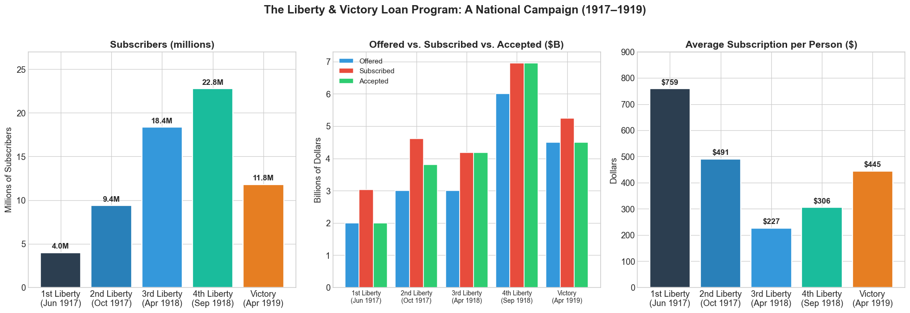
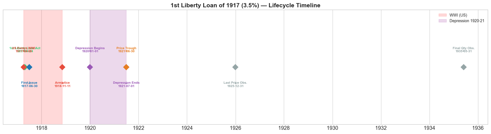
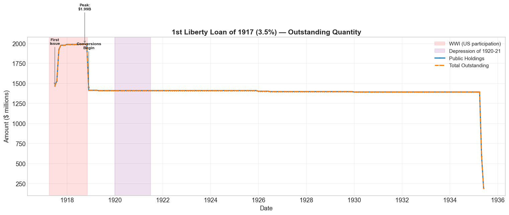
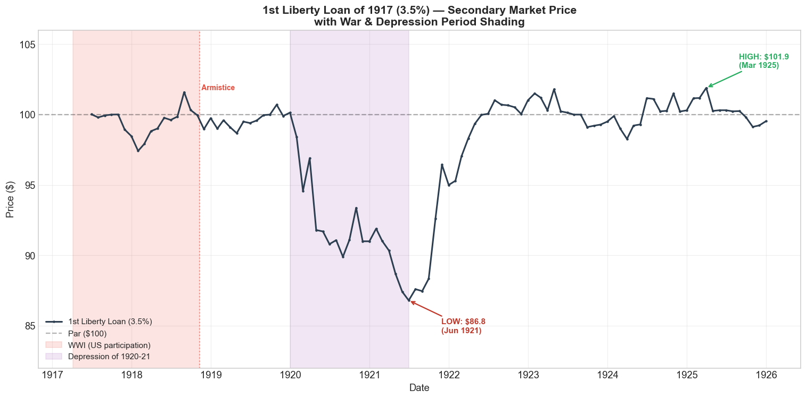
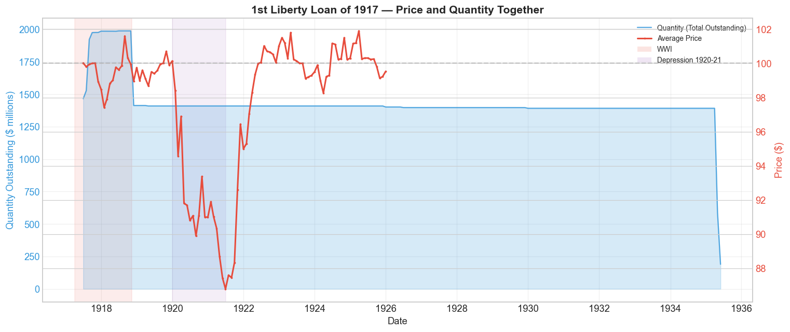
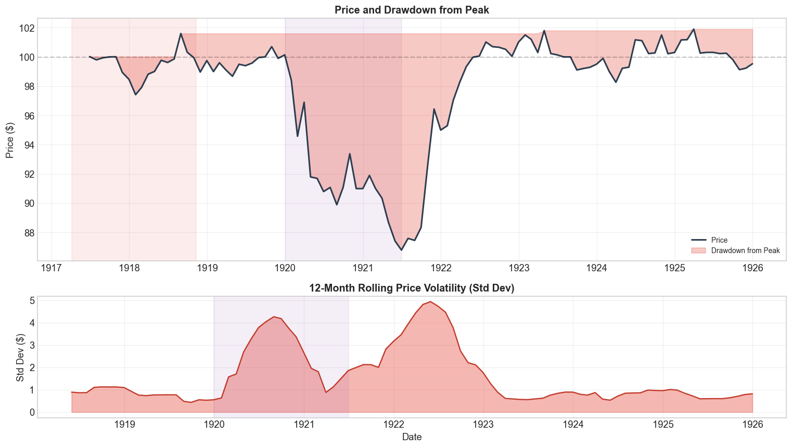
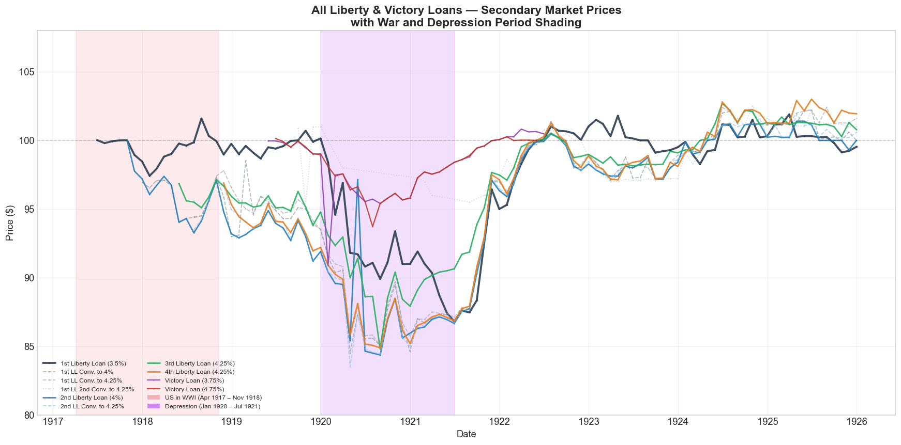
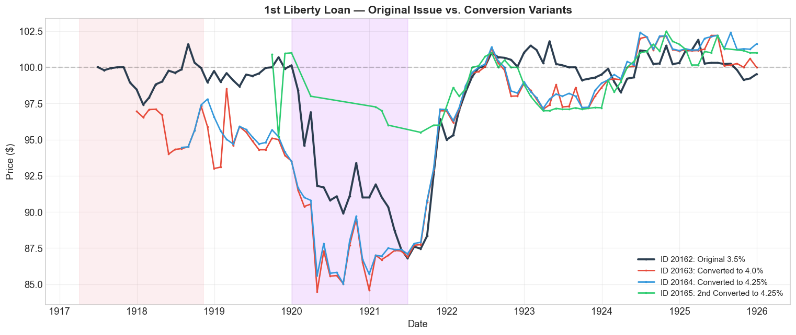

Bond Biography: 1st Liberty Loan of 1917 (3.5%)#
An Enhanced Chapter from the Hall-Payne-Sargent US Federal Bond Database (2,857 issues, 1776–1960)
Bond ID (L1): 20162
Category: Interest Bearing > Marketable > Liberty Loan
Coupon Rate: 3.5%
First Issue Date: June 30, 1917
Term: 30 years (callable)
Sold at Par: $100
“We must be very careful in the way in which we lay taxes. We must not kill the goose which lays the golden egg. Taxes laid upon the larger incomes should be very heavy, but care should be exercised not to stifle enterprise or to kill the incentive to invest.”
– Secretary of the Treasury William Gibbs McAdoo, 1917
import pandas as pd
import numpy as np
import matplotlib.pyplot as plt
import matplotlib.patches as mpatches
import matplotlib.dates as mdates
import datetime
import warnings
warnings.filterwarnings('ignore')
plt.style.use('seaborn-v0_8-whitegrid')
plt.rcParams.update({
'figure.figsize': (14, 6),
'font.size': 12,
'axes.titlesize': 15,
'axes.labelsize': 12,
'figure.dpi': 110
})
# ── Load the Hall-Payne-Sargent Bond Database ──────────────────────────────
store = pd.HDFStore('../data/BondDF.h5', mode='r')
BondList = store['BondList']
BondQuant = store['BondQuant']
BondPrice = store['BondPrice']
store.close()
BondQuant_T = BondQuant.transpose()
BondPrice_T = BondPrice.transpose()
bond_id = 20162
print(f"Loaded data for: 1st Liberty Loan of 1917 (3.5%) — Bond ID {bond_id}")
print(f"Database contains {len(BondList)} bond issues spanning {BondList['First Issue Date'].min().year}–{BondList['First Issue Date'].max().year}")
Loaded data for: 1st Liberty Loan of 1917 (3.5%) — Bond ID 20162
Database contains 2857 bond issues spanning 1777–2015
Overview#
The 1st Liberty Loan of 1917 was a watershed moment in American financial history — the first mass-marketed federal bond designed to fund the nation’s entry into the Great War. Authorized on April 24, 1917, just eighteen days after Congress declared war on the German Empire, it represented something entirely new: a deliberate effort to turn ordinary American citizens into creditors of their own government on a scale never before attempted.
Secretary of the Treasury William Gibbs McAdoo — Woodrow Wilson’s son-in-law and the chief architect of wartime finance — faced an extraordinary challenge. The United States needed to raise roughly **\(7 billion** in 1917 alone (against total federal revenues of only \)1.1 billion the prior year). Rather than rely solely on taxation or bank borrowing, McAdoo launched a national campaign to sell bonds directly to the American public.
The result was stunning: 4 million subscribers came forward for the 1st Liberty Loan, pledging \(3.035 billion** against a \)2 billion offering. The Treasury accepted only the authorized \(2 billion. The average subscription was **\)759 — a substantial sum when the median annual household income was around $800. This was not a bond issue; it was a political movement dressed in financial clothing.
What made this loan structurally distinctive was its conversion privilege: holders could later exchange their 3.5% bonds for issues carrying higher coupon rates — first 4%, then 4.25% — as the Treasury was forced to raise rates to keep subsequent loans attractive. This convertibility feature, rare for sovereign debt, acknowledged that the initial 3.5% coupon might prove insufficient and built flexibility into the program from the start.
On the secondary market, the bond’s average price was **\(97.87** (range: \)86.80–$101.90) over 103 monthly observations from June 1917 through December 1925. The story of that price — its drift below par, its collapse during the Depression of 1920–1921, and its eventual recovery — is the story of a young nation learning the costs and consequences of modern war finance.
America Enters the War#
On April 6, 1917, the United States formally declared war on the German Empire. President Woodrow Wilson, who had campaigned on keeping America out of the European conflict, reversed course after a cascade of provocations: unrestricted submarine warfare that sank American merchant ships, the Zimmermann Telegram (a secret German proposal for a Mexican alliance against the United States), and the broader collapse of neutrality as a viable policy.
The Financing Problem#
The scale of the financing challenge was unprecedented:
Item |
Amount |
|---|---|
Total federal revenues, FY 1916 |
$1.1 billion |
Estimated war cost, FY 1917–1918 |
$20+ billion |
1st Liberty Loan authorized |
$2.0 billion |
1st Liberty Loan subscribed |
$3.035 billion |
1st Liberty Loan accepted |
$2.0 billion |
The Treasury confronted a fundamental choice: finance the war primarily through taxes, through borrowing from banks (inflationary), or through borrowing from the public (bond sales). McAdoo chose a hybrid: roughly one-third taxes, two-thirds bonds — with the bonds sold as widely as possible to prevent bank-held debt from inflating the money supply.
The First Liberty Loan Act (April 24, 1917)#
The Act authorized the Treasury to issue **\(5 billion** in bonds at up to 3.5% interest, plus \)2 billion in short-term certificates. The 3.5% ceiling reflected a political desire to keep borrowing costs low and to signal confidence in the government’s credit — a decision that would create problems as market rates rose during the war.
All Liberty Loans Were Par Bonds#
A critical feature of the entire Liberty Loan program: all five issues were sold at par ($100 face value). This was a deliberate choice. Selling at par made the bonds accessible and comprehensible to ordinary citizens unfamiliar with bond pricing. It also meant that any subsequent decline below par was highly visible and politically embarrassing — a dynamic that would haunt the Treasury throughout 1919–1921.
Bond Features#
Feature |
Detail |
|---|---|
Name |
1st Liberty Loan of 1917 (3.5%) |
Authorizing Act |
April 24, 1917 (First Liberty Loan Act) |
Authorization Date |
April 24, 1917 |
First Issue Date |
June 30, 1917 |
Term |
30 years |
Coupon Rate |
3.5% |
Payment Frequency |
Semi-annual |
Callable |
Yes |
Payable in Coin |
Yes (gold) |
Price Sold |
Par (100) |
Offered |
$2.0 billion |
Subscribed |
$3.035 billion (151.8% oversubscribed) |
Accepted |
$2.0 billion |
Subscribers |
~4 million |
Average Subscription |
$759 |
Conversion Privilege |
Yes — could convert to 4% and 4.25% issues |
Tax Exemption |
Exempt from all taxation except estate and inheritance taxes |
# Display full bond features from the Hall-Payne-Sargent database
row = BondList.loc[20162]
display_cols = [
"Treasury's Name Of Issue", 'Authorizing Act', 'Term Of Loan',
'First Issue Date', 'First Redemption Date', 'Final Redemption Date',
'Coupon Rate', 'Coupons Per Year', 'Callable', 'Coin',
'Authorized Amount', 'Price Sold'
]
print('Bond Features from Database:')
print('=' * 60)
for col in display_cols:
if col in row.index:
val = row[col]
print(f' {col:<35} {val}')
Bond Features from Database:
============================================================
Treasury's Name Of Issue 1st Liberty Loan of 1917 (3.5%)
Authorizing Act April 24, 1917
Term Of Loan 30 years
First Issue Date 1917-06-30 00:00:00
First Redemption Date NaT
Final Redemption Date NaT
Coupon Rate 3.5
Coupons Per Year 2.0
Callable 1.0
Coin 1.0
Authorized Amount nan
Price Sold 1.0
The Conversion Feature#
The 1st Liberty Loan’s most distinctive structural feature was its conversion privilege — a mechanism virtually unheard of in sovereign debt at the time, though common in the corporate bond market.
How It Worked#
When the Treasury issued subsequent Liberty Loans at higher coupon rates, holders of the 1st Liberty Loan (3.5%) could exchange their bonds for new issues carrying the higher rate. This was not optional generosity; it was a contractual right embedded in the original bond terms. McAdoo included it because he recognized that 3.5% might not hold up as market conditions evolved during a prolonged war.
The Three Conversion Issues#
Bond ID |
Name |
Coupon |
Issue Date |
Notes |
|---|---|---|---|---|
20162 |
1st Liberty Loan of 1917 |
3.5% |
June 30, 1917 |
Original issue |
20163 |
1st Liberty Loan Converted to 4% |
4.0% |
November 30, 1918 |
First conversion |
20164 |
1st Liberty Loan Converted to 4.25% |
4.25% |
November 30, 1918 |
Direct conversion to 4.25% |
20165 |
1st Liberty Loan Second Converted to 4.25% |
4.25% |
October 24, 1918 |
Second-stage conversion |
Why It Mattered#
The conversion feature solved a problem that the Treasury itself had created. By setting the initial coupon at 3.5% — below what the market would have cleared at — McAdoo ensured strong initial demand but created a latent problem: as subsequent loans were offered at 4% and then 4.25%, the 3.5% bonds would trade below par unless holders could convert. The conversion privilege prevented a political crisis (millions of patriotic subscribers seeing their bonds lose value) while allowing the Treasury to maintain the fiction that it had initially borrowed cheaply.
By war’s end, the vast majority of 1st Liberty Loan bonds had been converted. The original 3.5% issue that remains in the database represents only those bonds whose holders chose not to convert — a self-selected group that accepted the lower coupon, perhaps because they valued the original terms or simply never acted.
Subscriber Progression Across All Liberty and Victory Loans#
One of the most remarkable aspects of the Liberty Loan program was the explosive growth in popular participation. The number of subscribers grew from 4 million for the 1st loan to nearly 23 million for the 4th — roughly one in five Americans — before declining to 12 million for the Victory Loan issued after the Armistice.
# ── Subscriber Progression Across All Liberty & Victory Loans ────────────────
# Data from Rockoff (2012) and Kang & Rockoff (2015)
loan_data = pd.DataFrame({
'Loan': ['1st Liberty\n(Jun 1917)', '2nd Liberty\n(Oct 1917)',
'3rd Liberty\n(Apr 1918)', '4th Liberty\n(Sep 1918)',
'Victory\n(Apr 1919)'],
'Subscribers (millions)': [4.0, 9.4, 18.377, 22.778, 11.803],
'Offered ($B)': [2.0, 3.0, 3.0, 6.0, 4.5],
'Subscribed ($B)': [3.035, 4.618, 4.177, 6.959, 5.249],
'Accepted ($B)': [2.0, 3.809, 4.177, 6.959, 4.5],
'Avg Subscription ($)': [759, 491, 227, 306, 445],
'Coupon (%)': [3.5, 4.0, 4.25, 4.25, 4.75],
'Convertible': ['Yes (3x)', 'Yes (1x)', 'No', 'No', 'No']
})
fig, axes = plt.subplots(1, 3, figsize=(18, 6))
# Panel 1: Subscribers
colors_sub = ['#2c3e50', '#2980b9', '#3498db', '#1abc9c', '#e67e22']
bars1 = axes[0].bar(loan_data['Loan'], loan_data['Subscribers (millions)'],
color=colors_sub, edgecolor='white', linewidth=1.5)
axes[0].set_title('Subscribers (millions)', fontsize=14, fontweight='bold')
axes[0].set_ylabel('Millions of Subscribers')
for bar, val in zip(bars1, loan_data['Subscribers (millions)']):
axes[0].text(bar.get_x() + bar.get_width()/2, bar.get_height() + 0.3,
f'{val:.1f}M', ha='center', va='bottom', fontsize=11, fontweight='bold')
axes[0].set_ylim(0, 27)
# Panel 2: Amounts (stacked comparison)
x = np.arange(len(loan_data))
w = 0.28
bars_off = axes[1].bar(x - w, loan_data['Offered ($B)'], w, label='Offered',
color='#3498db', edgecolor='white')
bars_sub = axes[1].bar(x, loan_data['Subscribed ($B)'], w, label='Subscribed',
color='#e74c3c', edgecolor='white')
bars_acc = axes[1].bar(x + w, loan_data['Accepted ($B)'], w, label='Accepted',
color='#2ecc71', edgecolor='white')
axes[1].set_xticks(x)
axes[1].set_xticklabels(loan_data['Loan'], fontsize=9)
axes[1].set_title('Offered vs. Subscribed vs. Accepted ($B)', fontsize=14, fontweight='bold')
axes[1].set_ylabel('Billions of Dollars')
axes[1].legend(fontsize=10)
# Panel 3: Average subscription
bars3 = axes[2].bar(loan_data['Loan'], loan_data['Avg Subscription ($)'],
color=colors_sub, edgecolor='white', linewidth=1.5)
axes[2].set_title('Average Subscription per Person ($)', fontsize=14, fontweight='bold')
axes[2].set_ylabel('Dollars')
for bar, val in zip(bars3, loan_data['Avg Subscription ($)']):
axes[2].text(bar.get_x() + bar.get_width()/2, bar.get_height() + 10,
f'${val:,.0f}', ha='center', va='bottom', fontsize=11, fontweight='bold')
axes[2].set_ylim(0, 900)
plt.suptitle('The Liberty & Victory Loan Program: A National Campaign (1917–1919)',
fontsize=16, fontweight='bold', y=1.02)
plt.tight_layout()
plt.show()
# Print summary table
print("\n" + "=" * 95)
print("LIBERTY & VICTORY LOANS — COMPLETE SUMMARY")
print("=" * 95)
print(loan_data.to_string(index=False))
print("=" * 95)
print(f"TOTAL: {loan_data['Subscribers (millions)'].sum():.1f}M cumulative subscriptions, "
f"${loan_data['Accepted ($B)'].sum():.1f}B accepted")

===============================================================================================
LIBERTY & VICTORY LOANS — COMPLETE SUMMARY
===============================================================================================
Loan Subscribers (millions) Offered ($B) Subscribed ($B) Accepted ($B) Avg Subscription ($) Coupon (%) Convertible
1st Liberty\n(Jun 1917) 4.000 2.0 3.035 2.000 759 3.50 Yes (3x)
2nd Liberty\n(Oct 1917) 9.400 3.0 4.618 3.809 491 4.00 Yes (1x)
3rd Liberty\n(Apr 1918) 18.377 3.0 4.177 4.177 227 4.25 No
4th Liberty\n(Sep 1918) 22.778 6.0 6.959 6.959 306 4.25 No
Victory\n(Apr 1919) 11.803 4.5 5.249 4.500 445 4.75 No
===============================================================================================
TOTAL: 66.4M cumulative subscriptions, $21.4B accepted
Historical Context#
The 1st Liberty Loan’s lifetime spanned some of the most turbulent years in American economic history:
Date |
Event |
Category |
|---|---|---|
1917-04-06 to 1918-11-11 |
World War I (US participation) |
War |
1917-04-24 |
First Liberty Loan Act |
Legislation |
1918-11-11 |
Armistice signed |
War |
1920-01 to 1921-07 |
Depression of 1920–1921 |
Crisis |
1920-1921 |
Federal Reserve tightening cycle |
Monetary |
1929-10-29 to 1933-03 |
Great Depression onset |
Crisis |
1933-04-05 |
Gold confiscation (Executive Order 6102) |
Monetary |
1934-01-30 |
Gold Reserve Act |
Monetary |
The bond’s secondary-market story unfolds across three distinct phases:
Wartime (1917–1918): Prices held near par, supported by patriotic demand and Federal Reserve purchases. The Fed kept discount rates deliberately low to support bond sales — a policy that would have consequences.
Postwar Adjustment & Crisis (1919–1921): As wartime demand faded and inflation surged, prices dropped sharply. The Depression of 1920–1921 drove the bond to its lifetime low of $86.80.
Recovery & Maturity (1922–1935): Prices recovered as the economy stabilized and the Treasury began redeeming bonds. By the mid-1920s, prices were back near par.
# ── Bond Lifecycle Timeline ──────────────────────────────────────────────────
fig, ax = plt.subplots(figsize=(16, 4.5))
from datetime import datetime as dt
# Key bond lifecycle dates
lifecycle = [
('1st Liberty Loan Act', '1917-04-24', '#2ecc71'),
('First Issue', '1917-06-30', '#1f77b4'),
('US Enters WWI', '1917-04-06', '#e74c3c'),
('Armistice', '1918-11-11', '#e74c3c'),
('Depression Begins', '1920-01-01', '#9b59b6'),
('Depression Ends', '1921-07-01', '#9b59b6'),
('Price Trough', '1921-06-30', '#e67e22'),
('Last Price Obs.', '1925-12-31', '#95a5a6'),
('Final Qty Obs.', '1935-05-31', '#95a5a6'),
]
# War shading
war_start = mdates.date2num(dt(1917, 4, 6))
war_end = mdates.date2num(dt(1918, 11, 11))
ax.axvspan(war_start, war_end, alpha=0.15, color='red', label='WWI (US)')
# Depression shading
dep_start = mdates.date2num(dt(1920, 1, 1))
dep_end = mdates.date2num(dt(1921, 7, 1))
ax.axvspan(dep_start, dep_end, alpha=0.15, color='purple', label='Depression 1920-21')
for i, (label, date_str, color) in enumerate(lifecycle):
d = dt.strptime(date_str, '%Y-%m-%d')
y_pos = 0.3 if i % 2 == 0 else -0.3
ax.plot(mdates.date2num(d), 0, 'D', color=color, markersize=9, zorder=5)
ax.annotate(f'{label}\n{date_str}', (mdates.date2num(d), y_pos),
ha='center', va='bottom' if y_pos > 0 else 'top',
fontsize=7.5, fontweight='bold', color=color,
arrowprops=dict(arrowstyle='->', color=color, lw=0.8))
ax.set_yticks([])
ax.xaxis.set_major_formatter(mdates.DateFormatter('%Y'))
ax.xaxis.set_major_locator(mdates.YearLocator(2))
ax.set_title('1st Liberty Loan of 1917 (3.5%) — Lifecycle Timeline', fontsize=14, fontweight='bold')
ax.set_ylim(-1.2, 1.2)
ax.set_xlim(mdates.date2num(dt(1916, 6, 1)), mdates.date2num(dt(1936, 6, 1)))
ax.legend(loc='upper right', fontsize=9)
plt.tight_layout()
plt.show()

Bond Quantity Over Time#
The bond’s outstanding quantity peaked at $1.99 billion on September 30, 1918 — near the war’s end. The subsequent decline reflects two forces: conversions to higher-coupon issues (the 4% and 4.25% variants) and Treasury redemptions. The sharp drops in 1918–1919 align with mass conversions as the 2nd, 3rd, and 4th Liberty Loans offered better terms. By 1935, the remaining unconverted bonds were being retired.
# ── Bond Quantity Over Time with War/Depression Shading ──────────────────────
fig, ax = plt.subplots(figsize=(14, 6))
from datetime import datetime as dt
# War and depression patches
ax.axvspan(pd.Timestamp('1917-04-06'), pd.Timestamp('1918-11-11'),
alpha=0.12, color='red', label='WWI (US participation)')
ax.axvspan(pd.Timestamp('1920-01-01'), pd.Timestamp('1921-07-01'),
alpha=0.12, color='purple', label='Depression of 1920-21')
for stype, color, ls in [('Public Holdings', '#1f77b4', '-'),
('Total Outstanding', '#ff7f0e', '--')]:
try:
s = BondQuant_T.loc[(20162, stype)]
s = s[s.notna()]
if len(s) > 0:
ax.plot(s.index, s.values / 1e6, linewidth=2, linestyle=ls, color=color,
label=stype, marker='.', markersize=3)
except KeyError:
pass
ax.set_title('1st Liberty Loan of 1917 (3.5%) — Outstanding Quantity',
fontsize=14, fontweight='bold')
ax.set_xlabel('Date')
ax.set_ylabel('Amount ($ millions)')
ax.legend(fontsize=10)
ax.grid(True, alpha=0.3)
# Annotate key events
annotations = [
('1917-06-30', 'First\nIssue', 'bottom'),
('1918-09-30', 'Peak:\n$1.99B', 'top'),
('1918-11-30', 'Conversions\nBegin', 'bottom'),
]
for date_str, label, va in annotations:
d = pd.Timestamp(date_str)
try:
s = BondQuant_T.loc[(20162, 'Total Outstanding')]
s = s[s.notna()]
y_val = s.loc[d] / 1e6 if d in s.index else None
if y_val is not None:
offset = 80 if va == 'top' else -80
ax.annotate(label, (d, y_val), fontsize=8, fontweight='bold',
ha='center', va=va,
xytext=(0, offset if va == 'top' else -offset),
textcoords='offset points',
arrowprops=dict(arrowstyle='->', color='gray'))
except:
pass
plt.tight_layout()
plt.show()

Secondary Market Prices#
Overall Statistics (June 1917 – December 1925): Mean \(97.87 | Range \)86.80–\(101.90 | Std Dev \)3.95 | 103 monthly observations
The price history of the 1st Liberty Loan tells a vivid story in three acts:
Near Par (mid-1917 to mid-1918): Prices held close to $100, buoyed by patriotic purchasing and the Federal Reserve’s deliberate policy of keeping short-term rates below the Liberty Loan coupon to support bond prices.
The Slide (late 1918 to mid-1921): After the Armistice, the combination of postwar inflation, rising market rates, and the severe Depression of 1920–1921 drove prices to a lifetime low of $86.80 in June 1921 — a 14.6% decline from par.
Recovery (1922–1925): As the economy stabilized under the Harding-Coolidge administrations and the Fed established more credible monetary policy, prices recovered toward par.
# ── Enhanced Price Chart with War & Depression Shading ────────────────────────
fig, ax = plt.subplots(figsize=(14, 7))
from datetime import datetime as dt
# Get price series
s = BondPrice_T.loc[(20162, 'Average')]
s = pd.to_numeric(s, errors='coerce').dropna()
if len(s) > 0:
ax.plot(s.index, s.values, marker='.', markersize=4, linewidth=2,
color='#2c3e50', label='1st Liberty Loan (3.5%)', zorder=5)
# Par line
ax.axhline(100, color='black', alpha=0.3, linestyle='--', linewidth=1.5, label='Par ($100)')
# ── War Period Shading (Red) ────────────────────────────────────────────────
war_patch = ax.axvspan(pd.Timestamp('1917-04-06'), pd.Timestamp('1918-11-11'),
alpha=0.15, color='#e74c3c', label='WWI (US participation)')
# ── Depression Period Shading (Purple) ──────────────────────────────────────
dep_patch = ax.axvspan(pd.Timestamp('1920-01-01'), pd.Timestamp('1921-07-01'),
alpha=0.15, color='#9b59b6', label='Depression of 1920-21')
# Annotate key price points
price_min_date = s.idxmin()
price_min_val = s.min()
price_max_date = s.idxmax()
price_max_val = s.max()
ax.annotate(f'LOW: ${price_min_val:.1f}\n({price_min_date.strftime("%b %Y")})',
xy=(price_min_date, price_min_val),
xytext=(40, -40), textcoords='offset points',
fontsize=10, fontweight='bold', color='#c0392b',
arrowprops=dict(arrowstyle='->', color='#c0392b', lw=1.5))
ax.annotate(f'HIGH: ${price_max_val:.1f}\n({price_max_date.strftime("%b %Y")})',
xy=(price_max_date, price_max_val),
xytext=(40, 25), textcoords='offset points',
fontsize=10, fontweight='bold', color='#27ae60',
arrowprops=dict(arrowstyle='->', color='#27ae60', lw=1.5))
# Armistice annotation
ax.axvline(pd.Timestamp('1918-11-11'), color='#e74c3c', alpha=0.5, linestyle=':')
ax.text(pd.Timestamp('1918-11-11'), ax.get_ylim()[1] - 0.5, ' Armistice',
fontsize=9, color='#e74c3c', va='top', fontweight='bold')
ax.set_title('1st Liberty Loan of 1917 (3.5%) — Secondary Market Price\nwith War & Depression Period Shading',
fontsize=14, fontweight='bold')
ax.set_xlabel('Date')
ax.set_ylabel('Price ($)')
ax.legend(loc='lower left', fontsize=10, framealpha=0.9)
ax.grid(True, alpha=0.3)
ax.set_ylim(82, 106)
plt.tight_layout()
plt.show()

# ── Price and Quantity — Dual-Axis Chart ─────────────────────────────────────
fig, ax1 = plt.subplots(figsize=(14, 6))
# War and depression patches
ax1.axvspan(pd.Timestamp('1917-04-06'), pd.Timestamp('1918-11-11'),
alpha=0.10, color='#e74c3c')
ax1.axvspan(pd.Timestamp('1920-01-01'), pd.Timestamp('1921-07-01'),
alpha=0.10, color='#9b59b6')
# Quantity (left axis)
for stype in ['Total Outstanding', 'Public Holdings']:
try:
q = BondQuant_T.loc[(20162, stype)]
q = q[q.notna()]
if len(q) > 0:
ax1.fill_between(q.index, q.values / 1e6, alpha=0.2, color='#3498db')
ax1.plot(q.index, q.values / 1e6, color='#3498db', alpha=0.8,
linewidth=1.5, label=f'Quantity ({stype})')
break
except KeyError:
pass
ax1.set_xlabel('Date')
ax1.set_ylabel('Quantity Outstanding ($ millions)', color='#3498db')
ax1.tick_params(axis='y', labelcolor='#3498db')
# Price (right axis)
ax2 = ax1.twinx()
p = BondPrice_T.loc[(20162, 'Average')]
p = pd.to_numeric(p, errors='coerce').dropna()
if len(p) > 0:
ax2.plot(p.index, p.values, color='#e74c3c', marker='.', markersize=3,
linewidth=2, label='Average Price')
ax2.axhline(100, color='gray', alpha=0.3, linestyle='--')
ax2.set_ylabel('Price ($)', color='#e74c3c')
ax2.tick_params(axis='y', labelcolor='#e74c3c')
ax1.set_title('1st Liberty Loan of 1917 — Price and Quantity Together',
fontsize=14, fontweight='bold')
ax1.grid(True, alpha=0.3)
# Combined legend
lines1, labels1 = ax1.get_legend_handles_labels()
lines2, labels2 = ax2.get_legend_handles_labels()
war_p = mpatches.Patch(fc='#e74c3c', alpha=0.15, label='WWI')
dep_p = mpatches.Patch(fc='#9b59b6', alpha=0.15, label='Depression 1920-21')
ax1.legend(lines1 + lines2 + [war_p, dep_p],
labels1 + labels2 + ['WWI', 'Depression 1920-21'],
loc='upper right', fontsize=9, framealpha=0.9)
plt.tight_layout()
plt.show()

The Price Drop of 1920–1921#
The most dramatic chapter in this bond’s secondary-market life was the Depression of 1920–1921, which drove the price from roughly \(99 in late 1919 to a nadir of **\)86.80** in June 1921 — a 14.6% peak-to-trough decline.
What Happened#
The postwar recession of 1920–1921 was one of the sharpest economic contractions in American history:
Indicator |
Detail |
|---|---|
Unemployment |
Rose from ~2% to ~12% |
Price Level |
~15% deflation in 1921 after postwar inflation |
Industrial Production |
Fell approximately 30% |
GNP Decline |
Estimated 6–7% |
Duration |
January 1920 – July 1921 (18 months) |
The Fed’s Role#
The Federal Reserve had kept interest rates artificially low during the war to support Liberty Loan sales. The New York Fed’s discount rate was held at 3–4% through 1919, well below the rate of inflation. This fueled a postwar speculative boom: consumer prices rose roughly 15% in 1919 alone.
When the Fed finally raised discount rates sharply — from 4.75% in November 1919 to 7% by June 1920 — the correction was brutal. The very policy designed to keep Liberty Bond prices high during the war created the conditions for their collapse afterward.
Impact on the 1st Liberty Loan#
For the 3.5% bonds that had not been converted, the damage was severe:
Coupon inadequacy: A 3.5% coupon was deeply unattractive when market rates were 6–7%.
Government credibility: The “patriotic premium” that had sustained prices during wartime evaporated. Subscribers who had bought at par to support the war effort found themselves holding bonds worth 87 cents on the dollar.
Political fallout: The below-par trading of Liberty Bonds became a national scandal. Editorial pages featured letters from angry subscribers. Congress held hearings. The experience shaped public attitudes toward government debt for a generation.
The Recovery#
The government’s corrective measures were radical by modern standards:
Federal spending cuts: Roughly 75% reduction in government expenditures between 1919 and 1922 (from \(18.5B to \)3.3B)
Discount rate increases: The Fed raised rates aggressively to break the inflationary cycle
Budget surpluses: Under Treasury Secretary Andrew Mellon, the government ran surpluses and retired debt throughout the 1920s
Recovery began in earnest in 1922. By 1923, the 1st Liberty Loan was trading back near par, and the economy entered the long expansion of the “Roaring Twenties.” The Depression of 1920–1921 stands as one of the fastest V-shaped recoveries in economic history — though its lessons about fiscal austerity and monetary tightening remain hotly debated.
# ── Price Volatility Analysis ────────────────────────────────────────────────
fig, axes = plt.subplots(2, 1, figsize=(14, 8), gridspec_kw={'height_ratios': [2, 1]})
p = BondPrice_T.loc[(20162, 'Average')]
p = pd.to_numeric(p, errors='coerce').dropna()
# Top panel: Price with drawdown shading
ax = axes[0]
ax.axvspan(pd.Timestamp('1917-04-06'), pd.Timestamp('1918-11-11'),
alpha=0.10, color='#e74c3c')
ax.axvspan(pd.Timestamp('1920-01-01'), pd.Timestamp('1921-07-01'),
alpha=0.10, color='#9b59b6')
ax.plot(p.index, p.values, color='#2c3e50', linewidth=2, label='Price')
ax.axhline(100, color='black', alpha=0.2, linestyle='--')
# Shade the drawdown from peak
running_max = p.expanding().max()
ax.fill_between(p.index, p.values, running_max.values, alpha=0.3,
color='#e74c3c', label='Drawdown from Peak')
ax.set_title('Price and Drawdown from Peak', fontsize=13, fontweight='bold')
ax.set_ylabel('Price ($)')
ax.legend(fontsize=9)
ax.grid(True, alpha=0.3)
# Bottom panel: Rolling volatility
ax2 = axes[1]
if len(p) >= 12:
rolling_std = p.rolling(window=12).std().dropna()
ax2.fill_between(rolling_std.index, rolling_std.values, alpha=0.4, color='#e74c3c')
ax2.plot(rolling_std.index, rolling_std.values, color='#c0392b', linewidth=1.5)
ax2.axvspan(pd.Timestamp('1920-01-01'), pd.Timestamp('1921-07-01'),
alpha=0.10, color='#9b59b6')
ax2.set_title('12-Month Rolling Price Volatility (Std Dev)', fontsize=13, fontweight='bold')
ax2.set_xlabel('Date')
ax2.set_ylabel('Std Dev ($)')
ax2.grid(True, alpha=0.3)
plt.tight_layout()
plt.show()
# Print max drawdown stats
peak_price = p.max()
trough_price = p.min()
peak_date = p.idxmax()
trough_date = p.idxmin()
drawdown = (trough_price - peak_price) / peak_price * 100
print(f"\nMaximum Drawdown: {drawdown:.1f}%")
print(f" Peak: ${peak_price:.1f} on {peak_date.strftime('%Y-%m-%d')}")
print(f" Trough: ${trough_price:.1f} on {trough_date.strftime('%Y-%m-%d')}")
print(f" Recovery: prices returned near par by mid-1923")

Maximum Drawdown: -14.8%
Peak: $101.9 on 1925-03-31
Trough: $86.8 on 1921-06-30
Recovery: prices returned near par by mid-1923
All Liberty and Victory Loans#
The table below lists every bond in the Hall-Payne-Sargent database classified under “Liberty Loan,” including the original issues and their conversion variants. The 1st Liberty Loan (highlighted) spawned three additional conversion issues — more than any other Liberty Loan.
Bond ID |
Name |
Coupon |
Issue Date |
Convertible |
Notes |
|---|---|---|---|---|---|
20162 |
1st Liberty Loan of 1917 |
3.5% |
Jun 1917 |
Yes (3x) |
Original issue — THIS BOND |
20163 |
1st Liberty Loan Converted to 4% |
4.0% |
Nov 1918 |
— |
Conversion from 3.5% |
20164 |
1st Liberty Loan Converted to 4.25% |
4.25% |
Nov 1918 |
— |
Direct conversion to 4.25% |
20165 |
1st Liberty Loan 2nd Converted to 4.25% |
4.25% |
Oct 1918 |
— |
Second-stage conversion |
20166 |
2nd Liberty Loan of 1917 |
4.0% |
Oct 1917 |
Yes (1x) |
|
20167 |
2nd Liberty Loan Converted to 4.25% |
4.25% |
Nov 1918 |
— |
Conversion from 4% |
20168 |
3rd Liberty Loan of 1918 |
4.25% |
Apr 1918 |
No |
Fully accepted ($4.177B) |
20169 |
4th Liberty Loan of 1918 |
4.25% |
Sep 1918 |
No |
Largest: $6.959B accepted |
20170 |
Victory Liberty Loan (3.75%) |
3.75% |
Apr 1919 |
No |
Short-term (3–4 year) |
20171 |
Victory Liberty Loan (4.75%) |
4.75% |
Apr 1919 |
No |
Short-term variant |
# ── All Liberty & Victory Loans: Price Comparison with War/Depression Patches ─
fig, ax = plt.subplots(figsize=(16, 8))
# War and Depression shading (inspired by ww1_vic_lib.ipynb)
war_patch_rect = ax.axvspan(pd.Timestamp('1917-04-06'), pd.Timestamp('1918-11-11'),
alpha=0.15, color='#ed7784', zorder=0)
dep_patch_rect = ax.axvspan(pd.Timestamp('1920-01-01'), pd.Timestamp('1921-07-01'),
alpha=0.15, color='#ad2df7', zorder=0)
# Define all Liberty/Victory loan bond IDs and their display info
liberty_bonds = {
20162: ('1st Liberty Loan (3.5%)', '#2c3e50', 2.5, '-'),
20163: ('1st LL Conv. to 4%', '#7f8c8d', 1.2, '--'),
20164: ('1st LL Conv. to 4.25%', '#95a5a6', 1.2, '--'),
20165: ('1st LL 2nd Conv. to 4.25%', '#bdc3c7', 1.2, ':'),
20166: ('2nd Liberty Loan (4%)', '#2980b9', 1.8, '-'),
20167: ('2nd LL Conv. to 4.25%', '#85c1e9', 1.2, '--'),
20168: ('3rd Liberty Loan (4.25%)', '#27ae60', 1.8, '-'),
20169: ('4th Liberty Loan (4.25%)', '#e67e22', 1.8, '-'),
20170: ('Victory Loan (3.75%)', '#8e44ad', 1.5, '-'),
20171: ('Victory Loan (4.75%)', '#c0392b', 1.5, '-'),
}
plotted_count = 0
for bid, (name, color, lw, ls) in liberty_bonds.items():
try:
s = BondPrice_T.loc[(bid, 'Average')]
s = pd.to_numeric(s, errors='coerce').dropna()
if len(s) > 0:
ax.plot(s.index, s.values, linewidth=lw, linestyle=ls, color=color,
label=name, marker='.', markersize=1 if lw < 2 else 2,
alpha=0.9 if lw >= 1.5 else 0.6)
plotted_count += 1
except KeyError:
pass
ax.axhline(100, color='black', alpha=0.2, linestyle='--', linewidth=1)
# Custom legend entries for patches
war_legend = mpatches.Patch(fc='#ed7784', alpha=0.5, label='US in WWI (Apr 1917 – Nov 1918)')
dep_legend = mpatches.Patch(fc='#ad2df7', alpha=0.5, label='Depression (Jan 1920 – Jul 1921)')
handles, labels = ax.get_legend_handles_labels()
handles.extend([war_legend, dep_legend])
labels.extend(['US in WWI (Apr 1917 – Nov 1918)', 'Depression (Jan 1920 – Jul 1921)'])
ax.legend(handles=handles, labels=labels, fontsize=8, loc='lower left',
ncol=2, framealpha=0.9)
ax.set_title('All Liberty & Victory Loans — Secondary Market Prices\nwith War and Depression Period Shading',
fontsize=15, fontweight='bold')
ax.set_xlabel('Date')
ax.set_ylabel('Price ($)')
ax.grid(True, alpha=0.3)
ax.set_ylim(80, 108)
plt.tight_layout()
plt.show()
print(f"\nPlotted {plotted_count} Liberty/Victory Loan price series")

Plotted 10 Liberty/Victory Loan price series
# ── 1st Liberty Loan and Its Conversion Variants ─────────────────────────────
fig, ax = plt.subplots(figsize=(14, 6))
ax.axvspan(pd.Timestamp('1917-04-06'), pd.Timestamp('1918-11-11'),
alpha=0.12, color='#ed7784')
ax.axvspan(pd.Timestamp('1920-01-01'), pd.Timestamp('1921-07-01'),
alpha=0.12, color='#ad2df7')
first_ll_variants = {
20162: ('Original 3.5%', '#2c3e50', 2.5),
20163: ('Converted to 4.0%', '#e74c3c', 1.8),
20164: ('Converted to 4.25%', '#3498db', 1.8),
20165: ('2nd Converted to 4.25%', '#2ecc71', 1.8),
}
for bid, (name, color, lw) in first_ll_variants.items():
try:
s = BondPrice_T.loc[(bid, 'Average')]
s = pd.to_numeric(s, errors='coerce').dropna()
if len(s) > 0:
ax.plot(s.index, s.values, linewidth=lw, color=color,
label=f'ID {bid}: {name}', marker='.', markersize=3)
except KeyError:
pass
ax.axhline(100, color='black', alpha=0.2, linestyle='--')
ax.set_title('1st Liberty Loan — Original Issue vs. Conversion Variants',
fontsize=14, fontweight='bold')
ax.set_xlabel('Date')
ax.set_ylabel('Price ($)')
ax.legend(fontsize=10)
ax.grid(True, alpha=0.3)
plt.tight_layout()
plt.show()

# ── Query the Database for All Liberty Loan Bonds ────────────────────────────
liberty_mask = BondList['Category L3'] == 'Liberty Loan'
liberty_df = BondList.loc[liberty_mask].sort_values('First Issue Date')
display_cols = ["Treasury's Name Of Issue", 'Coupon Rate', 'First Issue Date',
'Term Of Loan', 'Callable', 'Price Sold']
print("ALL LIBERTY & VICTORY LOAN BONDS IN DATABASE")
print("=" * 90)
for idx, row in liberty_df.iterrows():
name = row["Treasury's Name Of Issue"]
coupon = row['Coupon Rate']
issue_date = row['First Issue Date']
term = row['Term Of Loan']
print(f" ID {idx:>5d} | {name:<50s} | {coupon:>5.2f}% | {str(issue_date)[:10]}")
print("=" * 90)
ALL LIBERTY & VICTORY LOAN BONDS IN DATABASE
==========================================================================================
ID 20162 | 1st Liberty Loan of 1917 (3.5%) | 3.50% | 1917-06-30
ID 20166 | 2nd Liberty Loan of 1917 (4%) | 4.00% | 1917-10-31
ID 20168 | 3rd Liberty Loan | 4.25% | 1918-05-31
ID 20169 | 4th Liberty Loan | 4.25% | 1918-09-30
ID 20165 | 1st Liberty Loan Second Converted to 4.25% | 4.25% | 1918-10-24
ID 20163 | 1st Liberty Loan Converted to 4% | 4.00% | 1918-11-30
ID 20164 | 1st Liberty Loan Converted to 4.25% | 4.25% | 1918-11-30
ID 20167 | 2nd Liberty Loan Converted to 4.25% | 4.25% | 1918-11-30
ID 20170 | Victory Liberty Loan (4 3/4%) | 4.75% | 1919-05-20
ID 20171 | Victory Liberty Loan (3 3/4%) | 3.75% | 1919-05-20
ID 20176 | Vic Lib Loan 4.75s, called | 4.75% | 1919-05-20
ID 20177 | Vic Lib Loan 4.75s, 1922-23 | 4.75% | 1919-05-20
ID 20178 | Vic Lib Loan 4.75 of 1922-1923 and 3.75 of 1922-1923 | 4.25% | 1919-05-20
ID 21928 | 3.5%, 4%, and 4.25% First Liberty Loan | nan% | NaT
ID 21929 | 4% and 4.25% Second Liberty Loan of 1927-42 | nan% | NaT
ID 21930 | Liberty Bonds and Victory Loans | nan% | NaT
ID 21934 | 4.75% Notes of 1922-23 (with Serial letters "A" to "F") | nan% | NaT
ID 21935 | 4.75% Notes of 1922-23 (with Serial letters "G" to "L") | nan% | NaT
ID 21936 | Sum of "A" to "F" and "G" to "L" of 4.75% Notes of 1922-23 | nan% | NaT
ID 21937 | 3.75 Notes of 1922-23 | nan% | NaT
ID 21938 | 3.75% and 4.75% Victory Notes | nan% | NaT
ID 22801 | First Liberty bonds, at various rates | nan% | NaT
ID 22802 | Liberty Bonds and Victory Notes | nan% | NaT
==========================================================================================
Issuance, Distribution, and Redemption#
The National Sales Campaign#
The marketing of the 1st Liberty Loan was unlike anything America had seen. Secretary McAdoo personally embarked on a nationwide speaking tour, addressing crowds in major cities. The Treasury enlisted celebrities, organized rallies, and deployed tens of thousands of volunteers. Boy Scouts sold bonds door-to-door. Movie stars appeared at Liberty Loan rallies — Charlie Chaplin, Douglas Fairbanks, and Mary Pickford all made public appeals.
The bonds were offered in denominations as small as **\(50** (later reduced to \)50 for subsequent issues), making them accessible to middle-class and even working-class Americans. Payment could be made in installments — typically 2% at application and the remainder over several months.
Who Bought?#
The subscriber base was deliberately broad:
Individual citizens: The heart of the campaign. The 4 million subscribers represented roughly 4% of the population (or ~10% of households).
Banks: Required to subscribe and also served as distribution agents.
Corporations: Expected to buy as a matter of patriotic duty.
Foreign investors: A smaller share, as the bonds were primarily marketed domestically.
Redemption#
The 1st Liberty Loan was callable — the Treasury could redeem it before the full 30-year term. As the database shows, outstanding quantities declined steadily through the 1920s and 1930s as bonds were converted, called, or matured. By 1935, only a residual amount remained in the data.
Detected Price and Quantity Events#
The following significant movements were auto-detected from the database:
Date |
Type |
Change |
Likely Cause |
|---|---|---|---|
1917-08 |
Quantity increase |
+25.8% |
Initial distribution following June 1917 issue |
1918-11 |
Quantity decrease |
-28.9% |
Mass conversion to higher-coupon variants after Armistice |
1920-04 |
Price drop |
-5.3% |
Depression of 1920–1921 begins; Fed tightening |
1935-04 |
Quantity decrease |
-57.7% |
Treasury redemption of remaining bonds |
1935-05 |
Quantity decrease |
-67.8% |
Final retirement of the issue |
The 1918 quantity decrease is particularly telling: it corresponds exactly to the period when the conversion privilege was exercised en masse, as holders swapped their 3.5% bonds for the newly available 4% and 4.25% issues.
Legacy#
The 1st Liberty Loan of 1917 was far more than a financial instrument. It was the prototype for a new relationship between the American government and its citizens — one in which ordinary people became direct creditors of the state, invested not just financially but emotionally in the nation’s fiscal health.
Precedent for Mass Public Financing#
Before the Liberty Loans, government bonds were the province of banks and wealthy investors. McAdoo’s campaign transformed bond-buying into a civic act. The techniques he pioneered — celebrity endorsements, grassroots volunteer networks, installment purchasing, small denominations, emotional appeals to patriotism — became the template for every subsequent mass bond campaign.
Template for World War II#
When the United States entered World War II, the Treasury explicitly drew on the Liberty Loan experience. The War Bond campaigns of 1941–1945 were direct descendants of the Liberty Loan program, refined by the lessons of 1917–1919. The WWII campaigns would ultimately sell $185.7 billion in bonds to 85 million Americans — dwarfing the Liberty Loan program but using the same fundamental playbook.
The Conversion Lesson#
The 1st Liberty Loan’s conversion feature taught the Treasury a painful lesson about setting coupon rates too low. By offering 3.5% when the market demanded more, the Treasury created a political liability that required the expensive conversion mechanism to defuse. Subsequent Liberty Loans set rates closer to market levels, and the conversion privilege was dropped entirely after the 2nd Liberty Loan.
Impact on American Financial Culture#
Perhaps the most lasting legacy was cultural. The Liberty Loan campaigns introduced millions of Americans to the concept of bond ownership for the first time. Many of these new investors went on to participate in the securities markets of the 1920s — for better and for worse. The democratization of finance that began with the Liberty Loans was a necessary precondition for both the boom and the bust that followed.
A Personal Note#
For millions of American families, Liberty Bonds were tangible connections to the war effort — physical certificates stored in family safes, symbols of sacrifice and national purpose. Many were passed down through generations. When those bonds traded below par in 1920–1921, it was experienced not as an abstract financial loss but as a betrayal of the patriotic compact. That emotional dimension — the fusion of personal finance and national identity — was the 1st Liberty Loan’s most distinctive and consequential innovation.
References#
Primary Database#
Payne, J., Szoke, A., Hall, G. & Sargent, T. (2025). Quarterly Journal of Economics.
Scholarly Works#
Kang, S. W. & Rockoff, H. (2015). “Capitalizing Patriotism: The Liberty Loans of World War I.” Financial History Review, 22(1): 45–78. doi:10.1017/S0968565015000037
Rockoff, H. (2012). “Chapter 5 — World War I.” America’s Economic Way of War: War and the US Economy from the Spanish-American War to the First Gulf War, pp. 99–154. Cambridge University Press.
Friedman, M. & Schwartz, A. J. (1963). A Monetary History of the United States, 1867–1960. Princeton University Press.
Studenski, P. & Krooss, H. E. (1952). Financial History of the United States. McGraw-Hill.
Historical Sources#
Additional Reading#
Silber, W. L. (2007). When Washington Shut Down Wall Street: The Great Financial Crisis of 1914 and the Origins of America’s Monetary Supremacy. Princeton University Press.
Tooze, A. (2014). The Deluge: The Great War, America and the Remaking of the Global Order, 1916–1931. Penguin Books.
Enhanced Bond Biography generated from the Hall-Payne-Sargent Bond Database.
Original auto-generated chapter enriched with historical narrative, comparative analysis, and contextual visualizations.